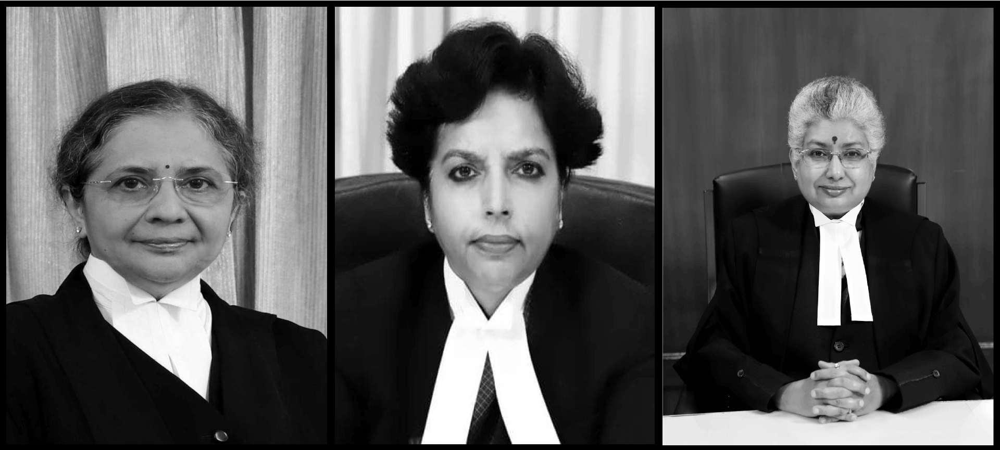

The collegium system of appointing higher judiciary has failed to appoint more women to Indian High Courts. However, there are systemic challenges that have fueled the disparity.
Shalaka Shinde | Feb 19, 2023The rare sighting of a woman as a High Court judge can be credited for the headlines in national newspapers of India that read "Woman judge among four elevated as chief justices of high courts". Even though the criteria of qualification for a person to become a high court judge is set, the current system of collegium gets the final decision on promotions. The collegium system is a group of judges that decides on the appointment of judges to higher courts including 25 high courts and the supreme court. The system has been in place since 1993.
The collegium system had come under scrutiny and has been a topic of debate for the past few years since the central government of India tried to introduce the National Judicial Appointment Committee (NJAC). The NJAC, in a nutshell, will give the legislative authorities a say in the appointment of higher judiciary. Here is where the catch lies. The higher courts in India deal with topics that are fuel as well as fodder for political discourse of the country - legality of hijab and triple talaaq, entry of women to temples where they were not allowed earlier, abrogation of Section 370 of the Indian Constitution which gave the conflict area of Jammu and Kashmir autonomy, the Citizenship Amendment Act-National Register of Citizens (CAA-NRA), and the list can go on. In the run-up to the 2024 general election, which will send the country on a political overdrive, who makes these court case decisions is of utmost importance.
While the number of men appointed as high court judges in a single year has been as high as 161, the highest number of women appointed to high courts has been not more than 14.

In the 25 high courts in the country, a judge is selected based on recommendation made by that high court's collegium. The recommendation is sent to the supreme court collegium which either accepts or rejects the candidate. Therefore, the onus of maintaining gender parity lies mostly with the high court collegium, according to the views of Professor Rangin Pallav Tripathy, registrar of National Law University, Orissa, India published in The Print. "While the high court collegiums cannot ensure who becomes a judge, they have the power to ensure who does not," he wrote.

Among men, a majority of high court appoitees are practicing lawyers, but among women, majority of those selected for high court are from the lower judiciary. According to the data, the highest number of women appoited to high court from the lower judiciary came from Delhi while Allahabad was the favority picking ground among men.
For the ascention to ultimate authority of Indian judiaciary, the Supreme Court, the process becomes even more high stakes and less predictable. The Supreme Court is the last authority on multiple issues that affect gender issues, national politics, economic issues, and social issues, among others. And the lack of gender diversity can cripple the discourse on some of these issues.
| The three members of the bench that put a stay on hearings related to increased tax on sanitary napkins in 2018 were men. |
| Of the five member bench that issued judgement on the issue of entry of women to Sabarimala temple in 2018, only one was a woman who retired in 2021. |
| The 2022 landmark judgement on abortion rights of women regardless of their marital status was by a three-member bench of all men. |
| The 2021 decision to open gates for girls to appear for entrance exam to the premier defence training academy, National Defence Academy (NDA), was by a two member, both men, bench. |
| The two-member, all men, bench had a split verdict in the Hijab ban case in India in 2022. |
In any given year, there are 25 potential contenders for the vacancies in 34 sanctioned judicial posts of the Supreme Court. The court currently has 27 appointees and 7 vacancies. The decision, however, remains with the apex court's collegium. Their recommendations are then sent to the President of India who then notifies it.
As per the latest regulation by the Supreme Court, there are three major categories and five subcategories that are considered before recommending a judge for the 34 coveted positions. The criteria include seniority among all HC judges all over the country and the seniority of a judge within their own jurisdiction, merit of the judge, and diversity of candidates. Within the diversity criteria, there are five sub-categories, according to the Supreme Court of India:
| 1. Representation of High Courts with low representation in the Supreme Court. |
| 2. Inclusion of marginalised and backward segments of society. |
| 3. Gender diversity. |
| 4. Representation of minorities. |
Of the 27 judges, there are currently three women in the Supreme Court judiciary: Bangalore Venkataramiah Nagarathna, Hima Kohli, and Bela Trivedi.
Justice Sunita Agarwal of Allahabad High Court, aside from Justice Bangalore Nagarathna, is the only second name that emerged from the cleaned dataset, filtered for three conditions:
| 1. The judge was appointed to the high court before 2013 (therefore, completing at least 10 years of service). |
| 2. The judge identifies as female. |
| 3. The retirement year of the judge is after 2023 (therefore, the judge is still in service). |
For the same three filters, but with gender identity as male instead of female, there are 55 probable results from the cleaned dataset against solitary Justice Agarwal. Of the 55, 5 have already ascended to the highest court.
GitHub repository of the project.